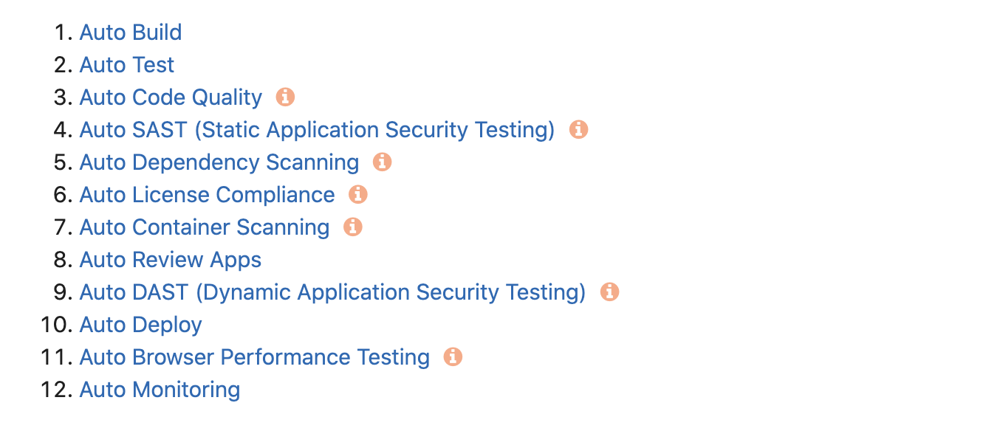
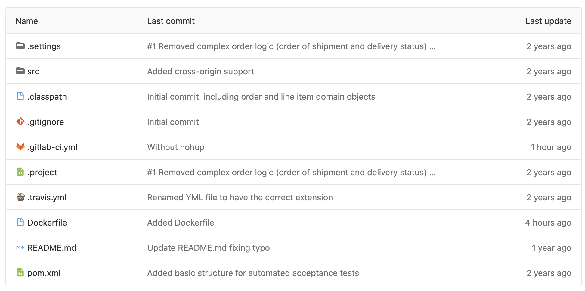

Techtalk
Einführung
Continuous Integration
..beschreibt das fortlaufende Zusammenfügen von Komponenten zu einer Anwendung mit dem Ziel die Softwarequalität zu erhöhen.
Continuous Deployment
..bezeichnet das automatische Einspielen von Softwareversionen auf Entwicklungs-, Test-, Integrations- und Produktivumgebung
Keine Silver Bullets – außer Continuous Delivery?

Klassiche CI Tools
- Hudson/Jenkins
- TeamCity
- CruiseControl
- uvw.
Neue Welle
- TravisCI
- CircleCI
- GitLab CI/CD
Speichere im Repository
wie Modul gebaut und deployed werden soll
GitLab CI/CD
“Starting from version 8.0, GitLab Continuous Integration (CI) is fully integrated into GitLab itself and is enabled by default on all projects.”
GitLab CE
- CI/CD ist ein Kernstück von GitLab
- Kann auch auf GitHub verwendet werden
- Open Source
Features
- Application Performance Monitoring
- Alerting
- Built-in Container Registry
- Built for using containers and Docker
- Cloud Native
- Code Quality Reports
Auto DevOps

Auto DevOps
gitlab-ci.yml

“Ein edles Beispiel macht die schweren Taten leicht.”
Simples Beispiel
image: maven:3-jdk-8
build:
stage: build
script: mvn compile
test:
stage: test
script: mvn test
deploy:
stage: deploy
script: mvn deploy
only:
- master
Auch branches sollten gebaut werden, wenn etwas eingecheckt wird!
Artefakte persitieren
maven-build:
stage: build_jar
script:
- echo "Building the app"
- mvn package -B
artifacts:
paths:
- target/*
expire_in: 5min
Docker Images bauen
docker-build:
stage: build_container
image: docker:stable
script:
- mv target/*.jar my-webapp.jar
- docker build -t my-docker-image .
Deploy
deploy:
stage: deploy
image: docker:stable
script:
- echo "Deploying endpoint"
- docker run -d -p 8080:8080 my-docker-image
only:
- master
Rules
docker build:
script: docker build -t my-image:$CI_COMMIT_REF_SLUG .
rules:
- changes:
- Dockerfile
Pipeline Architektur
pipeline_architectures.htmlRunners

Shell Runner
sudo gitlab-runner register -n \
--url https://gitlab.com/ \
--registration-token REGISTRATION_TOKEN \
--executor shell \
--description "My Runner"
Docker Runner
sudo gitlab-runner register -n \
--url https://gitlab.com/ \
--registration-token REGISTRATION_TOKEN \
--executor docker \
--description "My Docker Runner" \
--docker-image "docker:19.03.8" \
--docker-privileged \
--docker-volumes "/certs/client"
Docker Runner
- Polyglot Pipelines
- Test- und Livesystem müssen garnicht mehr so verschieden sein
Demonstration
GitLab CI/CD Installation
Fazit
Überflüssig?
- Jenkins
- Nexus Repository Manager
- SonarQube
- Alerting / Monitoring VM
Vorteile gegenüber Jenkins
- Templating
- Build- und Deployanweisungen im Repository
- Autoscaling for Runners
- Docker Support
- DAG Pipeline verkürzt Bauzeit
- Rules Keyword: Baue nur wenn wirklich nötig